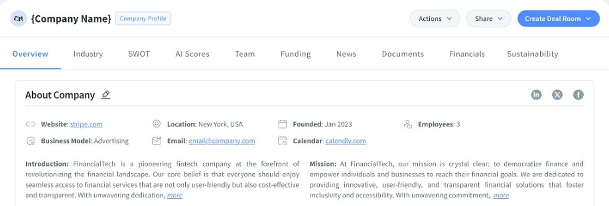

01
Start the dealon the company profile
Deal creation was buried, and people never reached the structured flow. My guess: a button on the profile would lift creation without adding steps.
The profile shows “Create Deal Room” when no room exists and “Switch to Deal Room” when one does. The company is picked for you, a first-run modal sets expectations, and setup runs in a straight line with little backtracking.
- Tried
- Creation from its own entry in the navigation
- Dropped
- The separate nav entry
- Why
- People start with companies, not deals. The context should travel with the action.
